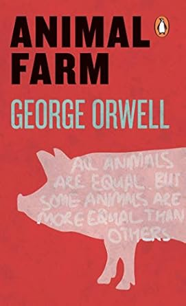

Animal Farm

A biting satire on dictatorship written during the Second World War and published in 1945,
ANIMAL FARM is perhaps the most celebrated twentieth-century English satire after the same writer's
NINETEEN EIGHTY-FOUR. One of the very few writers to be compared in power, artistry and moral authority
with Jonathan Swift, the purity of Orwell's spare prose and the logic of his dark comedy emphasize the
stark message of man's inhumanity to man and beast's to beast .
My Review
Animal Farm is a simple yet profound standard teaching tool used to discuss the dangers of
totalitarianism and the corruption of power. The book was widely banned in countries with Communist governments,
like the Soviet Union, China, and Cuba, because it was a direct criticism of their political systems.The book was
never officially banned, though there have been recent challenges in the US which led to my interest in picking up
the book.
I found it wise to keep the book simple and short so that the message of the book remained clear. The books’ a satirical allegory that critiques the corruption of communist ideals following the Russian Revolution and Joseph Stalin's rule. The Animals are ruled by a farmer which eventually is overthrown by the animals to create an egalitarian society. Shortly after the pigs take control of the farm and oppress the fellow farm animals and corrupt their memory with fact changes, mirroring the soviet union's actions which contradicts their original principals and creating a totalitarian government.
“All Animals are equal, but some animals are more equal than others”.
Online Review